Compare à ton Lightroom, mêmes valeurs. Panneau Color Grading, roues aux valeurs indiquées (teinte°/saturation). Témoin = photo sans réglage. Duo = teal-and-orange (ombres bleu 220/60 + hautes lumières orange 40/60), à comparer aussi au même look par Étalonnage. Calibré sur mesures Lightroom : tons moyens et luminance globale. PROVISOIRE (modélisé, non mesurable dans les exports) : profils ombres/hautes lumières, Fusion, Balance.
Photo A — DSCF5171.JPG 6240×4160 (EXIF OK)
Crop 1:1 (256 px natif) : petale / fleur rouge @ (2600, 2500) — le teintage des ombres et des hautes lumieres se juge ici en 1:1
Temoin (tout a 0)


moy 63.6 · σ 34.9
cb123799 / 16de2ece
Ombres bleu 220 / sat 60
moy 63.4 · σ 35.0
c2c53ef0 / 25bd8c7e
Hautes lumieres orange 40 / sat 60
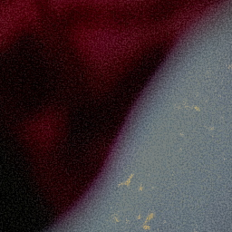
moy 63.6 · σ 34.9
2890a76d / ca04496f
Teal-and-orange (les deux)
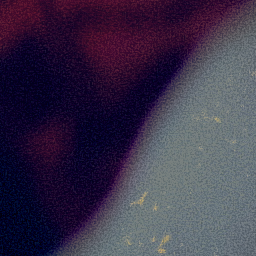
moy 63.4 · σ 35.0
da253e0e / b1af4954
Tons moyens vert 120 / sat 60
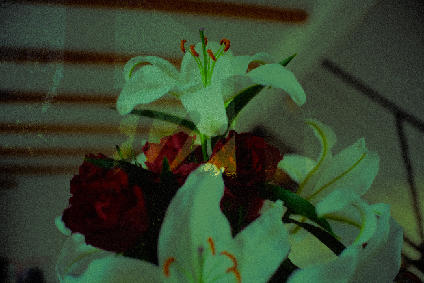
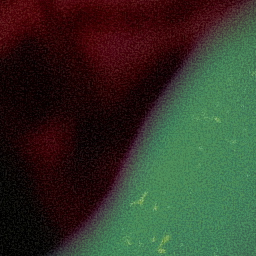
moy 63.7 · σ 34.7
9b69fa32 / 081f126c
Luminance globale +50
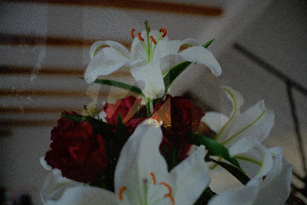
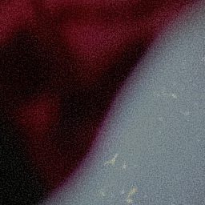
moy 72.0 · σ 37.2
1f871279 / 3d3e1fe8
Luminance globale -50
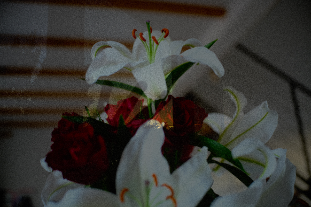
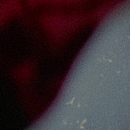
moy 55.6 · σ 32.5
3b51eeca / 82fa56bf
Duo + Balance +100
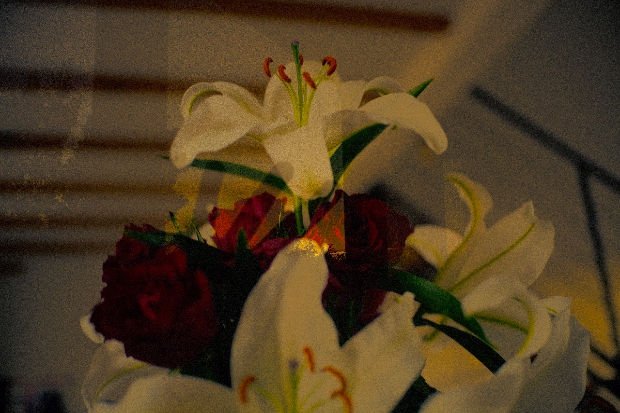
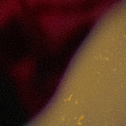
moy 62.2 · σ 33.6
94c678aa / 70086d69
Duo + Balance -100
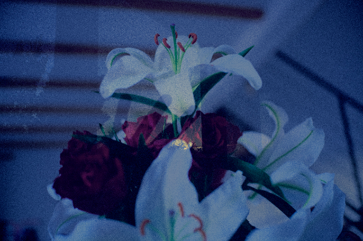
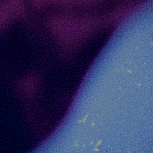
moy 60.9 · σ 34.8
8ef31972 / cca2dd8c
Duo + Fusion 0 (tranche)
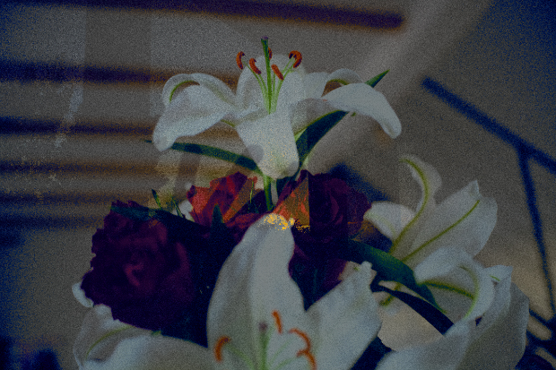
moy 63.2 · σ 35.3
05394134 / c9ae3ea2
Duo + Fusion 100 (fondu)
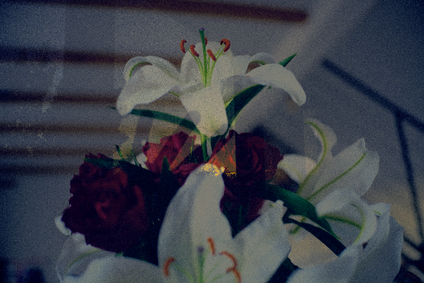
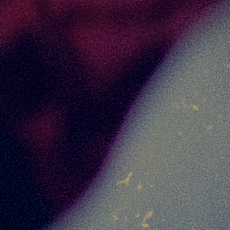
moy 63.5 · σ 34.9
387acea4 / edca23d4
Global orange 40 / sat 40
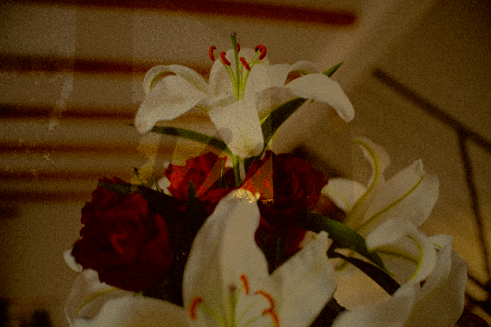
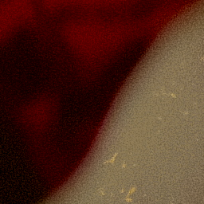
moy 60.9 · σ 34.9
9d4f6523 / c73084cb
Photo B — DSCF5169-edited-2.JPG 6240×4160 (EXIF OK)
Crop 1:1 (256 px natif) : main (peau) / orange @ (1500, 2300) — le teintage des ombres et des hautes lumieres se juge ici en 1:1
Temoin (tout a 0)


moy 32.9 · σ 36.7
f137224a / 0711acbb
Ombres bleu 220 / sat 60
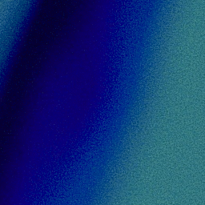
moy 31.2 · σ 37.0
818c61dd / 31cc16de
Hautes lumieres orange 40 / sat 60
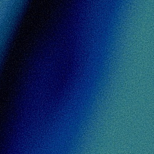
moy 32.9 · σ 36.8
d060a039 / 8158288b
Teal-and-orange (les deux)
moy 31.2 · σ 37.0
5733aa77 / ce63c8f3
Tons moyens vert 120 / sat 60
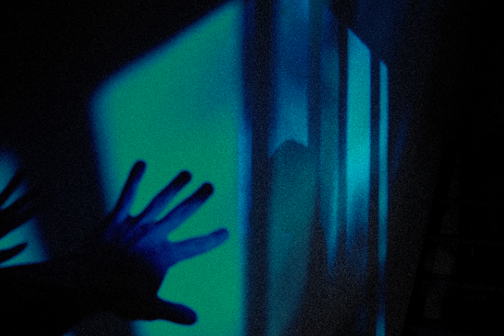
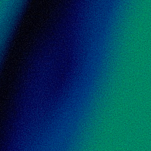
moy 32.4 · σ 35.8
7b0ce5d5 / 5a003bff
Luminance globale +50
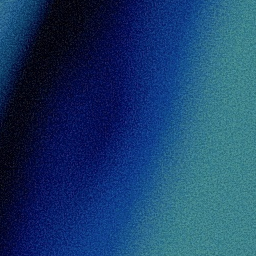
moy 38.3 · σ 40.7
517a6418 / af356a96
Luminance globale -50
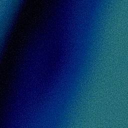
moy 27.8 · σ 32.7
c904f6fa / ff41836e
Duo + Balance +100
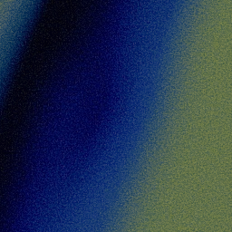
moy 34.3 · σ 38.6
1fb46a33 / 4f6a40f0
Duo + Balance -100
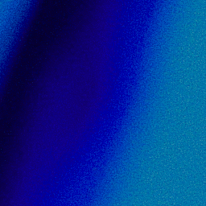
moy 27.4 · σ 33.6
5c93964e / db213efc
Duo + Fusion 0 (tranche)
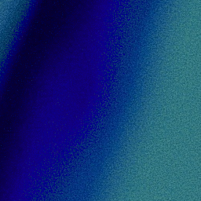
moy 31.0 · σ 37.3
685418d6 / 3f9a9886
Duo + Fusion 100 (fondu)
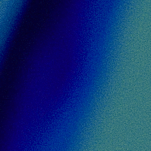
moy 31.2 · σ 37.0
deee49da / 9e0012c7
Global orange 40 / sat 40
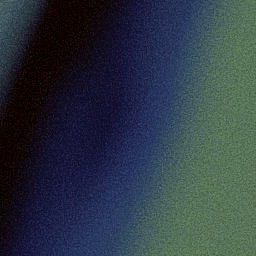
moy 34.9 · σ 38.7
c3003e49 / 4a195cd6